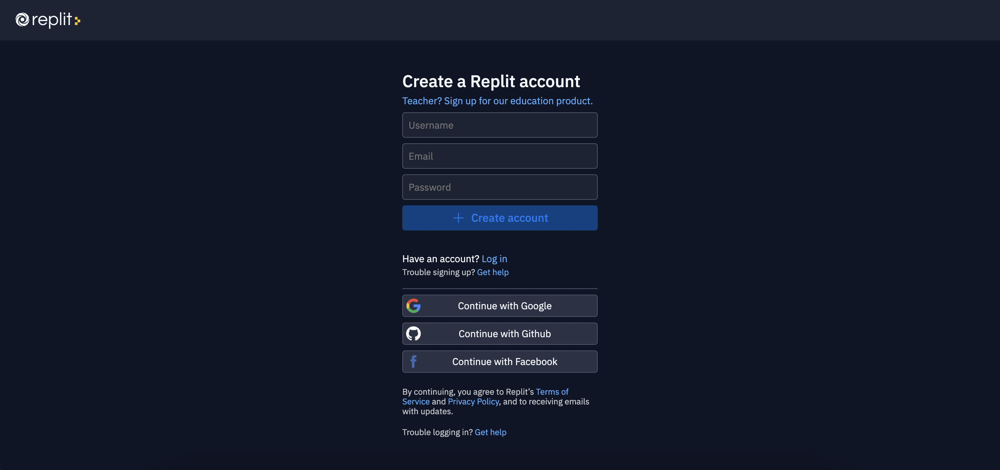
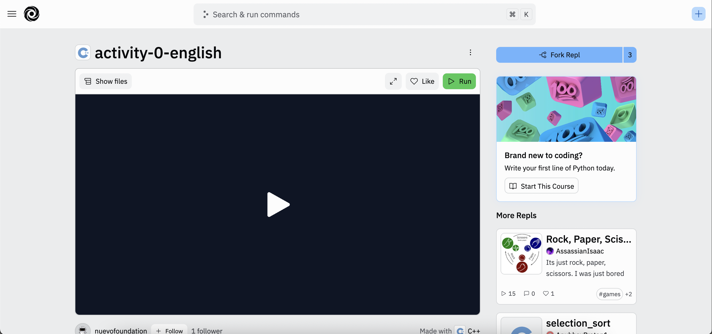
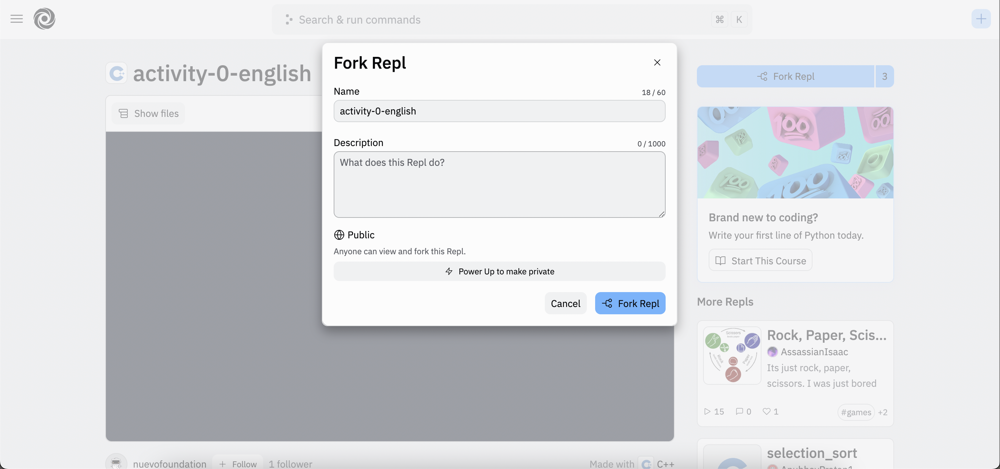
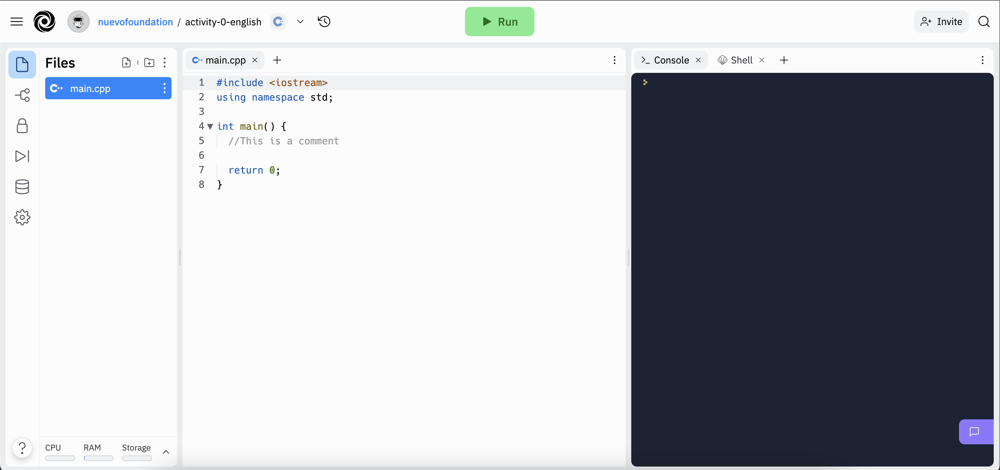

Usando Repl.It
Para ajudar o Rei e a Rainha, desenvolveremos um programa, em uma linguagem de programação chamada C++. Com esse programa poderemos inserir uma mensagem, e o programa irá modificá-la para torná-la secreta.
Usando Replit
Hoje você usará o Replit. Antes de começar, você precisará se cadastrar em uma conta Replit, caso ainda não tenha uma.
Clique no botão abaixo para se cadastrar em uma conta Replit - você precisará de uma conta de e-mail para se cadastrar. Se você já possui uma conta Replit, também pode fazer login em sua conta usando o botão abaixo.
A seguir, inicie o console Replit que usaremos hoje clicando no botão abaixo. Você deverá ver a tela abaixo.
Agora faremos um fork (bifurcação) do Repl, que significa simplesmente fazer uma cópia do programa, para que possamos fazer nossas próprias alterações nele. Clique no botão “Fork Repl” no canto superior direito e depois no botão “Fork Repl”.
Após bifurcar o Replit, você verá uma janela semelhante a esta abaixo:
Cada vez que você vir o botão “Iniciar Replit”, você precisará seguir as etapas acima para fazer o fork no repl e concluir uma atividade. Peça ajuda se estiver tendo problemas para fazer o fork!
Antes de prosseguirmos, vamos entender como essas janelas funcionam. O arquivo main.cpp contém o código ou instruções que o computador compreenderá e executará. Clicar no botão Run comandará o computador para executar as instruções desse arquivo. Os resultados podem ser vistos na aba console, na área inferior do Replit.
A seguir, vamos explicar o código que temos em main.cpp.
Bibliotecas e “#include”
Vá para o início de main.cpp. Você encontrará lá a seguinte linha:
#include <iostream>
Esta diretiva ou instrução refere-se à biblioteca iostream. Uma biblioteca é um local comum onde um conjunto de funções C++, normalmente relacionadas a um problema ou tópico comum específico, é agrupado. Existem bibliotecas para desenhar, para criar e gerenciar conexões de internet, para realizar operações matemáticas e para diversas outras finalidades. iostream é uma biblioteca muito básica que nos permite receber ou imprimir mensagens de e para o console.
Comentários
As linhas acinzentadas em main.cpp começam com //. Eles são conhecidos como comentários. Os comentários são úteis em nossos programas C++ como uma forma de documentá-los melhor e explicar com mais detalhes qual é o objetivo das instruções. Os comentários não são instruções e, na verdade, são ignorados pelo computador.
Namespace std
usando namespace std;
Esta linha específica nos permite acessar algumas palavras C++ já reservadas. Uma palavra reservada é uma palavra que possui um significado específico em uma determinada linguagem de programação; por isso não pode ser reutilizado para nenhum outro fim. Aqui, estamos referenciando a palavra reservada std para usar o código do padrão C++ já bem projetado e desenvolvido. using namespace std significa que queremos fazer referência ao namespace padrão.
Função principal
int main(){
return 0;
}
main é uma função obrigatória em qualquer programa C++. É o ponto de entrada do nosso programa. Dentro dos colchetes de abertura e fechamento { … } colocaremos todas as instruções que desejamos que o computador execute. Após clicar em Executar o computador executará essas instruções. return 0; indica que o programa concluiu com sucesso sua execução. Se as instruções fossem colocadas após essa linha, o computador não as executaria.
;